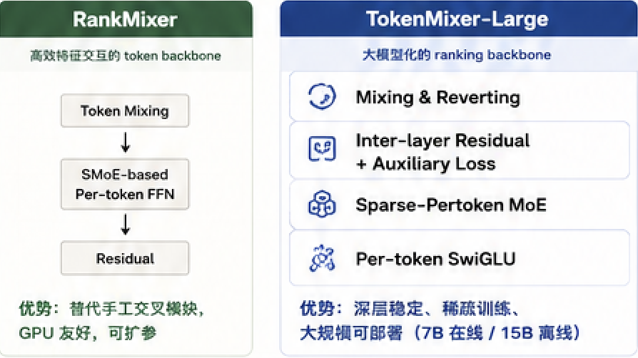
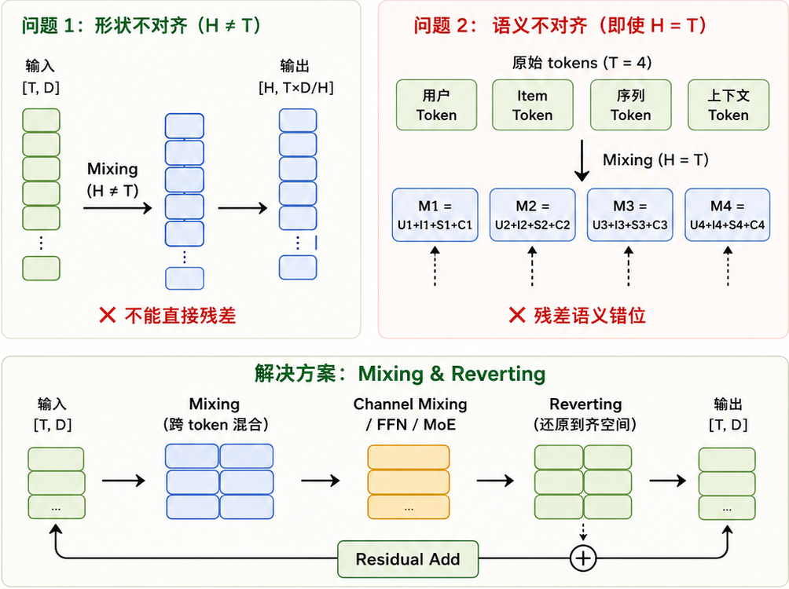
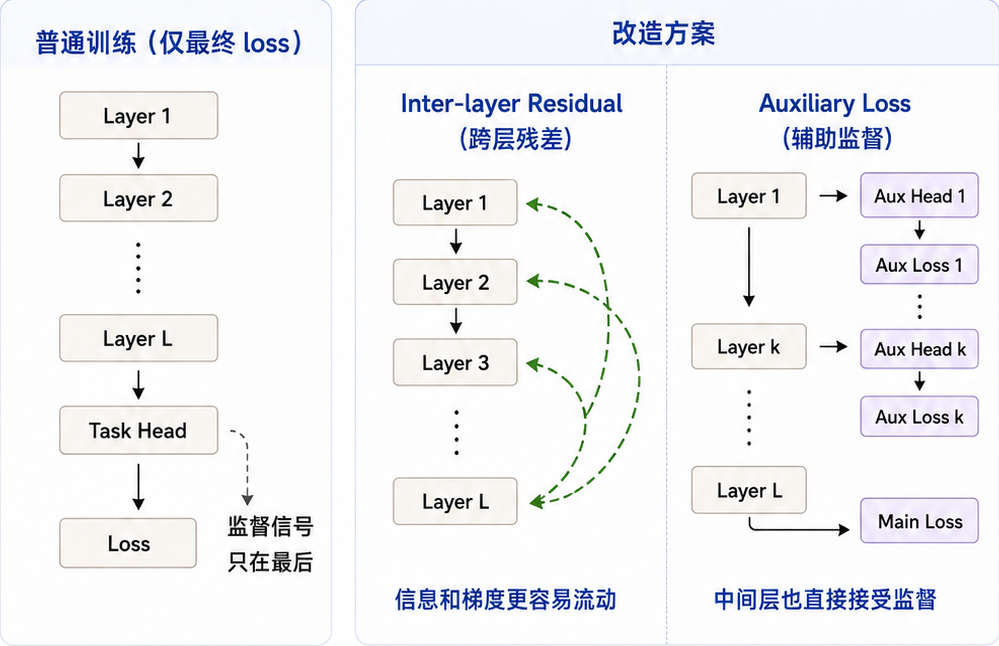
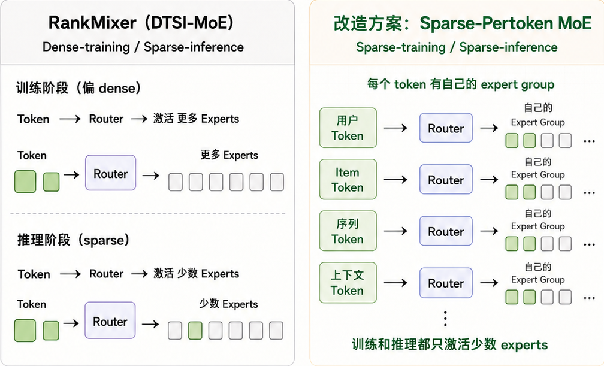
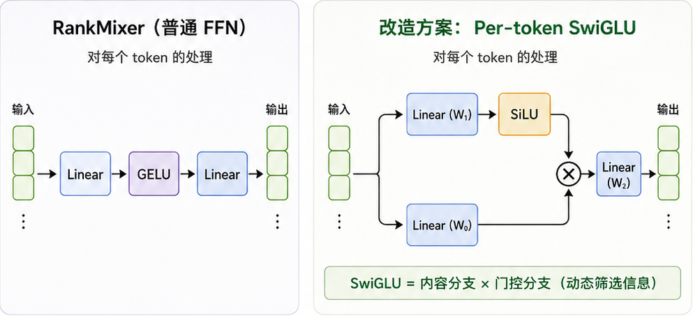

01
总览 / Overview
TokenMixer-Large:
把 RankMixer 推向大模型化
RankMixer 解决了“如何 GPU-friendly 扩参”，
TokenMixer-Large 解决“如何深层、稀疏、稳定地扩到 7B/15B”。
TokenMixer-Large 解决“如何深层、稀疏、稳定地扩到 7B/15B”。

解决的四大核心问题
⌁
Residual 连接
不够自然
(形状/语义不对齐)
不够自然
(形状/语义不对齐)
↗
深层梯度
更新不足
更新不足
◇
MoE 稀疏化
不完整
不完整
ϟ
FFN 表达能力
有限
有限
02
/ Residual
Residual 形状 / 语义不对齐
→ Mixing & Reverting
问题
Token Mixing 后：
1）形状可能不对齐（H ≠ T）；
2）即使形状对齐（H = T），mixed token 的语义也已混乱，无法自然残差。
Token Mixing 后：
1）形状可能不对齐（H ≠ T）；
2）即使形状对齐（H = T），mixed token 的语义也已混乱，无法自然残差。

解决的效果
形状对齐：
确保输出与输入在 [T, D] 上一致。
确保输出与输入在 [T, D] 上一致。
语义对齐：
让 residual 发生在语义一致的空间。
让 residual 发生在语义一致的空间。
结构更灵活：
支持多种混合模块，如 FFN、MoE 等。
支持多种混合模块，如 FFN、MoE 等。
深层更稳定：
每层残差更自然，信息不易混乱。
每层残差更自然，信息不易混乱。
03
03 / Deep training
深层梯度更新不足
→ Inter-layer Residual + Auxiliary Loss
问题： 深层模型中，浅层和中间层离最终 loss 太远，
梯度变弱，block 容易学不充分。
梯度变弱，block 容易学不充分。

带来的效果
浅层信息
更容易传到深层
更容易传到深层
梯度更易
回传到底层
回传到底层
低层 / 中层 block
更新更充分
更新更充分
模型更可训练
更稳定
更稳定
04
/ Sparse MoE
MoE 稀疏化不完整
→ Sparse-Pertoken MoE
问题：
RankMixer 的 DTSI-MoE 训练阶段仍偏 dense，
推理时 sparse，训练成本仍较高。
RankMixer 的 DTSI-MoE 训练阶段仍偏 dense，
推理时 sparse，训练成本仍较高。

带来的效果
训练和推理
都更稀疏
都更稀疏
保留 per-token
独立建模优势
独立建模优势
router 学习
更容易
更容易
参数容量更大，
但计算成本可控
但计算成本可控
05
/ SwiGLU
FFN 表达增强
→ Per-token SwiGLU
问题： RankMixer 使用 Linear → GELU → Linear，
表达能力有限，难以进一步增强非线性交叉。
表达能力有限，难以进一步增强非线性交叉。

为什么更强？
引入门控机制，动态筛选 / 放大有效信息
更强的非线性表达
更适合大规模 backbone 的 channel mixing
提升推荐任务中的复杂特征建模能力
06
06 / Summary
一句话总结
TokenMixer-Large 通过 Mixing & Reverting
+ 深层优化 + 稀疏 MoE + SwiGLU，
让 RankMixer 成为可深层堆叠、可稀疏扩扩参、
可大规模在线部署的下一代 ranking backbone。
+ 深层优化 + 稀疏 MoE + SwiGLU，
让 RankMixer 成为可深层堆叠、可稀疏扩扩参、
可大规模在线部署的下一代 ranking backbone。
01
⌁
Mixing & Reverting
修复 residual 形状/语义错位
02
↗
Inter-layer Residual
+ Auxiliary Loss
解决深层训练不足
03
◇
Sparse-Pertoken MoE
让训练和推理都更 sparse
04
ϟ
Per-token SwiGLU
增强 token 内部表达
🚀
从 RankMixer 到 TokenMixer-Large：
核心变化不是“继续堆层”，而是“围绕大模型 scaling 系统性重构 ranking backbone”。
核心变化不是“继续堆层”，而是“围绕大模型 scaling 系统性重构 ranking backbone”。